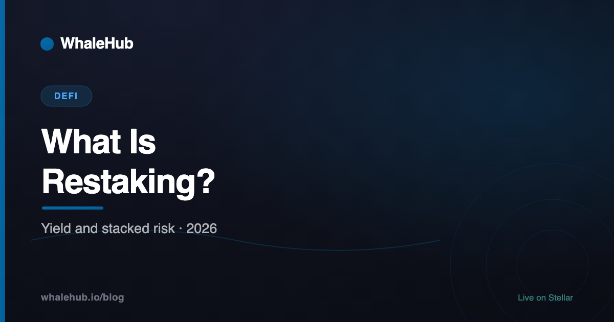
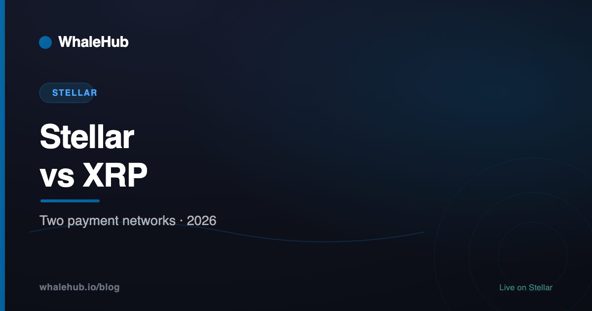
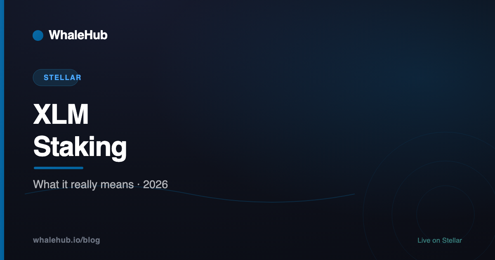

Crypto Passive Income
Every route sorted by where the yield originates — and what each actually costs you.
Read article →
Smart Contract Audits
Why audited protocols still get exploited, and how to actually read a report.
Read article →
DeFi Risks
Nine categories that actually cost people money, and what each looks like before it happens.
Read article →
Tokenized Treasuries
Why this corner of RWA worked when others stalled — and how it differs from a stablecoin.
Read article →
Tokenized Real Estate
The SPV underneath, the liquidity promise that mostly hasn't arrived, and what to check.
Read article →
What Is Restaking?
Reusing staked capital to secure other services — and the slashing conditions that come with it.
Read article →
RWA Tokenization on Stellar
Trustlines, authorization flags and clawback — compliance built into the protocol, not the contract.
Read article →
Stellar vs XRP
A shared founder, a common ancestor, and two networks that have diverged sharply since.
Read article →
XLM Staking
Stellar has no protocol-level staking. What the products calling themselves that actually are.
Read article →
DeFi Lending Platforms
Pooled vs isolated markets, oracle design, liquidation mechanics — the differences that matter.
Read article →
Aave vs Kamino
A multi-chain lending market against a Solana-native lending and liquidity stack.
Read article →
What Is Aave?
Supplying, borrowing, aTokens, health factor, flash loans and GHO — and what AAVE actually is.
Read article →
Is Kamino Finance Safe?
A risk-by-risk assessment: contracts, oracles, liquidation, chain risk, and which product carries what.
Read article →
Kamino Lend Explained
Supply rates, collateral factors, liquidation mechanics, and the risk of vault-as-collateral.
Read article →
What Is Kamino Finance?
Solana's lending and liquidity layer: vaults, K-Lend, Multiply, and where the yield comes from.
Read article →
Best KYC Platforms for RWA
Why RWA identity checks carry legal weight, and how the leading providers compare.
Read article →
RWA Tokenization Platforms
What a platform must actually provide, how the categories differ, and the questions that separate them.
Read article →
What Is RWA Tokenization?
What actually gets tokenized, the legal wrapper that gives a token value, and why most projects stall.
Read article →
APY vs APR in Crypto: What's the Difference?
APR is the simple rate, APY includes compounding. The formula, worked numbers, and the traps in quoted DeFi yields.
Read article →
Best Stellar Wallets in 2026
LOBSTR, Freighter, xBull and hardware options compared — plus trustlines, XLM reserves, and memo mistakes explained.
Read guide →
Impermanent Loss Explained (With Real Numbers)
The formula, the standard loss table, a full worked example in dollars, and when trading fees actually cover it.
Read article →
What Is Liquid Staking? Tokens, Risks & How It Works
Stake an asset and keep a tradable receipt. How LSTs work, what they unlock, the real risks, and how it maps onto Stellar.
Read article →
Stablecoin Yield: Where It Actually Comes From
Every yield is someone else's cost. The five real sources — and how to spot the ones on a countdown timer.
Read article →
What Is Blend? Stellar's DeFi Lending Protocol
How Blend's isolated lending pools, backstop, and reactive rates work — and how lending powers leveraged yield.
Read article →
Aquarius Concentrated Liquidity Pools Explained
Concentrated (CLMM) pools vs constant-product and stableswap — capital efficiency, ranges, and rewards.
Read guide →
Stellar Community Fund (SCF): How Grants Work
How SCF funds Stellar builders in XLM — submission rounds, community voting, award tracks, and how to apply.
Read article →
Crypto Loans Without Collateral
What flash loans really are, why lending is over-collateralised, and the four scam patterns.
Read article →
What Is Crypto Staking?
How proof-of-stake rewards work, where the yield really comes from, and what can go wrong.
Read article →
Best Crypto Staking Platforms in 2026
Custodial vs non-custodial, how to read APY honestly, and where the major platforms fit.
Read article →
Best KYC & KYB Compliance Platforms in 2026
iDenfy, Sumsub, Onfido, Jumio, Veriff and Persona compared for crypto and fintech.
Read article →
KYC vs KYB: Identity Verification in Crypto
What KYC and KYB each verify, how UBO and AML screening work, and why crypto platforms need both.
Read article →
What Is Stellar DeFi? The Complete 2026 Guide
The full map of decentralized finance on Stellar — Aquarius, AQUA, Soroban, and how to earn yield.
Read guide →
What Is the AQUA Token? Aquarius on Stellar
AQUA powers Stellar's liquidity incentives. Here's what it does, how ICE works, and why it matters.
Read article →
Aquarius AMM Explained: Stellar's Liquidity Layer
How Aquarius pools, emissions, and vote-directed rewards work on Stellar.
Read article →
How to Stake AQUA and Earn Rewards (2026)
A step-by-step walkthrough of staking AQUA, minting BLUB, and claiming rewards.
Read guide →
What Is Liquidity Mining? A Beginner's Guide
How providing liquidity earns rewards — and how impermanent loss really works.
Read article →
Soroban Smart Contracts Explained (Stellar)
What Soroban is, how Rust contracts work on Stellar, and why it unlocks DeFi.
Read article →
What Is BLUB? WhaleHub's Liquid AQUA Token
BLUB is your liquid receipt for staked AQUA. Here's how it's minted and what it does.
Read article →
Yield Farming on Stellar: How to Earn in 2026
Strategies for earning passive income on Stellar — pools, staking, and optimizers.
Read guide →
Auto-Compounding Crypto: How It Boosts Yield
Why compounding 48× a day beats manual claims — and how Stellar's fees make it possible.
Read article →
ICE Voting & Bribes on Aquarius, Explained
How ICE voting power directs AQUA emissions — and how bribes turn votes into yield.
Read article →
Stellar vs MultiversX: DeFi & Yield Compared
How the two chains stack up for DeFi and yield — architecture, fees, and aggregators.
Read article →
What Is a Yield Aggregator? WhaleHub, JewelSwap & More
How yield aggregators work across chains — and how to evaluate them.
Read article →
Stablecoins on Stellar: USDC, EURC, sUSD & PYUSD
The stablecoins powering Stellar payments and DeFi — and why the chain suits them.
Read article →
MiCA Explained: EU Rules for Stablecoins & DeFi
What the EU's crypto regulation means for stablecoins and DeFi, in plain English.
Read article →
Mycobo: Institutional Digital Assets on Stellar
How institutional tokenization and custody are being built on Stellar.
Read article →